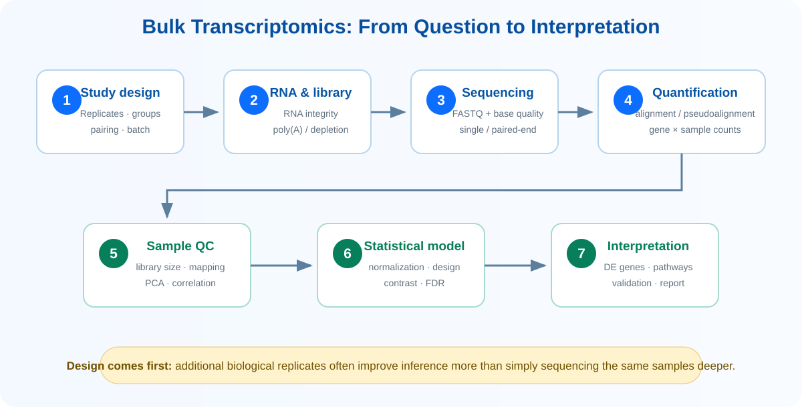
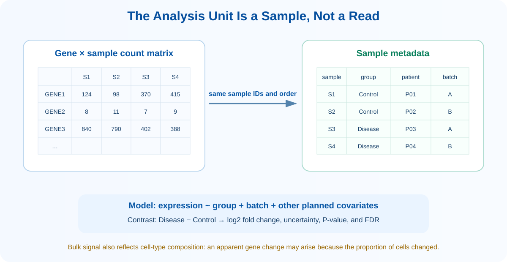

Learning Objectives
- Bulk transcriptomics에서 biological replicate, paired design, batch와 confounder의 의미를 설명할 수 있다.
- RNA extraction부터 count matrix 생성까지의 과정을 설명할 수 있다.
- Expression microarray와 RNA-seq의 측정원리 및 분석자료 차이를 비교할 수 있다.
- Count matrix와 sample metadata를 정확히 연결하고 design·contrast를 정의할 수 있다.
- Raw count, CPM, TPM과 normalization factor가 서로 다른 목적을 갖는다는 점을 이해한다.
- Log2 fold change, P-value와 FDR을 함께 해석할 수 있다.
- DEG, ORA 및 GSEA가 답하는 질문의 차이를 설명할 수 있다.
- Bulk expression이 세포 조성과 세포 내 발현 변화가 섞인 평균임을 이해한다.
1. Study Design Comes First
좋은 분석은 많은 read보다 명확한 연구질문과 적절한 biological replicate에서 시작합니다. 분석하려는 experimental unit이 환자, 동물, organoid 또는 독립 배양인지 먼저 정하고, 어떤 조건 차이를 검정할지 contrast로 표현해야 합니다. 같은 library를 여러 lane에서 읽은 값은 technical replicate이지 독립적인 biological replicate가 아닙니다.
| 설계요소 | 확인할 질문 | 분석에 미치는 영향 |
|---|---|---|
| Biological replicate | 서로 독립적인 환자·동물·배양인가? | 집단의 biological variability와 표준오차를 추정 |
| Paired design | 같은 환자의 before/after 또는 tumor/normal인가? | 환자 차이를 model에 포함해 within-subject 변화를 검정 |
| Batch | 추출일, library batch, lane이 condition과 겹치는가? | 완전히 confounded되면 통계적으로 분리할 수 없음 |
| Covariate | 연령, 성별, purity, RIN 등이 outcome과 연관되는가? | 사전에 계획한 model에 포함하되 표본수와 collinearity 고려 |
| Randomization | Condition이 batch와 processing order에 균형 있게 섞였는가? | 기술적 요인이 biological group을 대신 설명하는 위험 감소 |
| Power | 효과크기, dispersion, replicate 수가 충분한가? | 작은 효과와 다중검정 환경에서 발견 가능성을 결정 |
2. From Sample to Expression Matrix

Laboratory steps
Poly(A) selection은 주로 성숙한 polyadenylated mRNA를 풍부하게 하고, rRNA depletion은 rRNA를 제거하여 coding RNA와 여러 non-coding RNA를 함께 관찰합니다. Stranded library는 read가 어느 DNA strand에서 유래했는지 보존하여 겹치는 gene과 antisense transcript의 정량을 개선합니다.
Computational steps
Genome alignment은 exon junction, novel transcript와 fusion 등 위치정보가 필요한 분석에 유용합니다. Transcriptome 기반 pseudoalignment 또는 lightweight mapping은 미리 정의된 transcript annotation을 사용하여 빠르게 abundance를 추정합니다. 어느 방법이 항상 우월한 것이 아니라 연구질문에 따라 선택합니다.1

3. Expression Microarray vs RNA-seq
| Expression microarray | Bulk RNA-seq | |
|---|---|---|
| 측정 원리 | 미리 설계한 probe와 labelled cDNA/cRNA의 hybridization intensity | Transcript에서 유래한 cDNA fragment를 sequencing하고 read/fragment 수를 정량 |
| 원자료 | Scanner intensity, 예: CEL | Base call과 quality를 포함한 FASTQ |
| 정량 단위 | Probe 또는 probe set | Gene, exon 또는 transcript count |
| 새로운 transcript | Probe가 없는 target은 관찰하기 어려움 | 설계에 따라 novel transcript, splice junction과 fusion 탐색 가능 |
| Dynamic range | Background와 signal saturation의 영향 | 일반적으로 넓지만 depth와 mapping ambiguity의 영향 |
| 대표 전처리 | Background correction, normalization, probe summarization; 예: RMA | Read QC, alignment/quantification, low-count filtering, library-size/composition normalization |
| 주요 강점 | 성숙한 platform, 표준화된 archive, 비교적 낮은 비용 | Digital count, 넓은 범위, transcript 구조 분석 |
4. Quality Control
QC는 sample을 무조건 제거하는 단계가 아니라 관찰된 이상이 생물학적 차이인지 기술적 실패인지 조사하는 과정입니다. Raw read와 quantified matrix 양쪽에서 확인합니다.
5. Filtering and Normalization
RNA-seq sample은 총 read 수와 RNA composition이 다릅니다. Normalization은 이 기술적 규모 차이를 보정하여 sample 간 상대적 발현을 비교하도록 합니다. 동시에 거의 관찰되지 않는 gene을 사전에 filtering하면 불필요한 다중검정을 줄이고 dispersion 추정을 안정화할 수 있습니다.
| 값 | 무엇을 보정하는가? | 권장 용도 | 주의점 |
|---|---|---|---|
| Raw counts | 보정하지 않은 fragment/UMI 수 | DESeq2, edgeR 등 count model의 입력 | sample 간 직접 비교나 heatmap에 그대로 사용하지 않음 |
| CPM | Library size | 발현 filtering과 간단한 비교 | Gene length를 보정하지 않음 |
| TPM | Gene/transcript length와 library composition | 한 sample 안에서 abundance 표현, descriptive visualization | 일반적인 count-based DE 검정의 직접 입력으로 사용하지 않음 |
| DESeq2 size factor | Library size와 composition의 상대적 scale | Negative binomial DE model | 대부분의 gene이 같은 방향으로 크게 변한다는 극단적 상황에서는 가정 점검 |
| edgeR TMM | Library composition과 scale | edgeR count model | Low count filtering과 model specification이 함께 필요 |
| VST / rlog / logCPM | Mean–variance 관계를 완화 | PCA, clustering, heatmap | 원래 count model의 raw input과 구분 |
6. Differential Expression
RNA-seq count는 일반적으로 mean과 variance가 연결되어 있고 biological dispersion이 존재하므로 Poisson보다 유연한 negative binomial model을 널리 사용합니다. DESeq2와 edgeR은 library normalization, dispersion estimation 및 generalized linear model을 결합합니다.23 Microarray와 precision weight를 적용한 RNA-seq에는 limma 계열 방법을 사용할 수 있습니다.4
expression ~ patient + condition은 paired design의 예이고, Disease − Control contrast의 양의 log2FC는 disease에서 높은 발현을 의미합니다.| 결과 열 | 의미 | 해석 |
|---|---|---|
| baseMean / AveExpr | 전체 sample에서의 평균적인 expression 수준 | 매우 낮은 발현의 큰 fold change는 불확실할 수 있음 |
| log2FC | 지정한 contrast 방향의 효과크기 | +1은 두 배, −1은 절반 수준이지만 biological relevance는 맥락 의존 |
| SE / statistic | 효과 추정의 불확실성과 표준화된 증거 | 같은 log2FC라도 replicate와 dispersion에 따라 달라짐 |
| P-value | 각 gene의 null hypothesis 아래 관찰 가능성 | 수천 개 gene을 검사하므로 단독 기준으로 사용하지 않음 |
| Adjusted P-value / FDR | 다중검정을 고려한 오류율 | 사전에 정한 FDR과 effect-size 기준을 함께 적용 |
FDR < 0.05와 |log2FC| > 1은 한 가지 정책일 뿐입니다. 표본수, 연구목적, 임상적 의미 및 validation 계획에 맞춰 사전에 정의하고 전체 결과도 보존해야 합니다.7. From Genes to Biological Functions
DEG 목록은 분석의 끝이 아니라 어떤 biological process가 함께 변하는지 묻기 위한 입력입니다. Gene-level 변화가 pathway-level pattern으로 모이는지 확인하고, annotation bias와 적절한 background를 고려해야 합니다.
| 분석 | 입력 | 질문 | 주의점 |
|---|---|---|---|
| ORA: GO / KEGG | Cutoff를 통과한 DEG 목록 | 선택된 gene에 특정 기능이 과대표현되는가? | 측정·검정된 gene을 background로 사용하고 Up/Down을 분리 |
| GSEA | 모든 gene의 순위 통계량 | Gene set이 순위의 위나 아래에 체계적으로 몰리는가? | 순위 정의, gene-set redundancy와 sample permutation 조건 확인 |
| PPI network | Gene/protein 목록 | 알려진 또는 예측된 상호작용 구조가 있는가? | Database coverage와 publication bias; edge는 인과관계가 아님 |
| Upstream inference | Target-gene expression pattern | 어떤 TF 또는 regulator가 관찰된 변화와 일치하는가? | 가설 생성이며 직접적인 activity 측정은 아님 |
8. Strengths and Limitations of Bulk Data
Bulk RNA-seq은 replicate가 명확하고 sample-level comparison에 강하며 비용 대비 넓은 transcriptome을 안정적으로 관찰합니다. 그러나 조직을 구성하는 모든 세포의 RNA가 섞여 하나의 평균 profile이 됩니다.
같은 cell type에서 condition에 따라 특정 gene의 발현이 변한 경우입니다.
각 cell type의 발현은 같아도 immune infiltration처럼 cell proportion이 변해 bulk signal이 달라진 경우입니다.
이 두 상황은 bulk matrix에서 비슷하게 보일 수 있습니다. Purified cell, cell sorting, histology, marker-based deconvolution 또는 single-cell/spatial data로 구분을 보완할 수 있습니다.
| Bulk가 적합한 질문 | Single-cell/Spatial을 고려할 질문 |
|---|---|
| 명확한 조직·sample 단위에서 condition 평균이 다른가? | 어떤 cell type이 변화를 주도하는가? |
| 큰 cohort에서 재현성 있는 signature를 찾는가? | 희귀 세포와 연속적인 cell state가 존재하는가? |
| 비용 효율적으로 pathway 변화를 평가하는가? | 세포 간 이질성과 조직 내 위치가 핵심인가? |
References
- Conesa A, et al. A survey of best practices for RNA-seq data analysis. Genome Biology. 2016;17:13.
- Love MI, Huber W, Anders S. Moderated estimation of fold change and dispersion for RNA-seq data with DESeq2. Genome Biology. 2014;15:550.
- Robinson MD, McCarthy DJ, Smyth GK. edgeR: a Bioconductor package for differential expression analysis of digital gene expression data. Bioinformatics. 2010;26:139–140.
- Ritchie ME, et al. limma powers differential expression analyses for RNA-sequencing and microarray studies. Nucleic Acids Research. 2015;43:e47.
- Mortazavi A, et al. Mapping and quantifying mammalian transcriptomes by RNA-Seq. Nature Methods. 2008;5:621–628.
Key Takeaways
- Bulk transcriptomics의 statistical unit은 read가 아니라 독립적인 biological sample입니다.
- Count matrix의 열과 metadata의 sample ID 및 순서는 반드시 일치해야 합니다.
- Microarray intensity와 RNA-seq count는 데이터 생성원리와 통계분포가 다릅니다.
- Raw count는 count-based DE model에, transformed count는 PCA와 heatmap에, TPM은 descriptive abundance에 주로 사용합니다.
- Design은 설명변수를, contrast는 비교방향을 정의하며 log2FC의 부호는 contrast에 따라 달라집니다.
- P-value, FDR, effect size 및 expression level을 함께 해석해야 합니다.
- Bulk signal은 세포 내 발현 변화와 cell-type composition 변화를 모두 포함합니다.
Check Your Understanding
- 같은 환자의 tumor/normal 자료를 unpaired 분석하면 어떤 정보를 놓치나요?
- Condition과 batch가 완전히 일치하면 사후 보정이 어려운 이유는 무엇인가요?
- TPM을 일반적인 DESeq2 differential expression 입력으로 사용하지 않는 이유는 무엇인가요?
Disease − Controlcontrast에서 log2FC가 −1인 결과를 어떻게 해석하나요?- Bulk에서 immune marker가 증가했을 때 가능한 두 가지 biological explanation을 제시해 보세요.